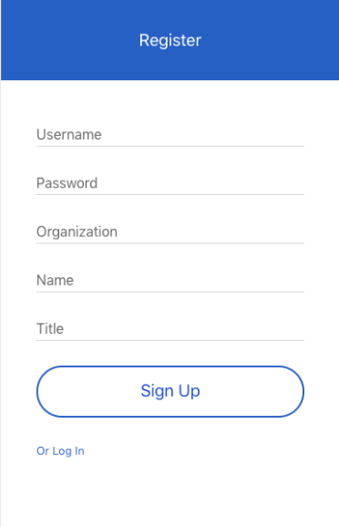
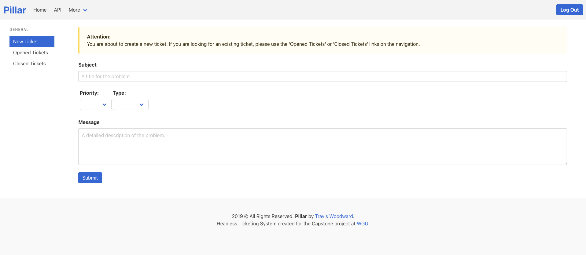

Topics
All topics are closed. In order to make a change, please create a support ticket here.What is Pillar?:
Pillar is a unique way for customers to handle their technical support. We provide the database, the dashboard and the tools... You supply the support. By accessing our API you can create your own front end interface for your customers so that it more closely resembles your product. For the purpose of this demo, we have supplied a GUI as an example of what is possible. However, it should be clear that your limitations are based entirely on our API. Anything that you can build with our API is fair game. Be creative!
Creating an Account:
Signing up for Pillar is simple. All you need to do is visit our registration page and create an account.
All fields are required, your password must be at least 4 characters in length.

Is my password safe?
Absolutely! Your password is hashed and then a cryptographic salt is applied to it. Your password is stored in a database as an entirely different value than what you type.
This makes it much harder for someone to steal your account and personal information.
Once you have succesfully registered, you will be taken to the login page where you will need log in once you have created an account.
Admin accounts must be created through the API. Admins access the Agent Dashboard by default while
non-admins are seen as Customers and will access the User Dashboard by default.
Submitting a Ticket:
Creating a new ticket is as easy as typing an email. Simply ensure you are logged in and make your way over to the user dashboard.
You will need to enter the subject of the ticket, the Priority and the Type of ticket. The most important field to fill out is the Message. In order to get responsive and
the most help out of the Pillar Ticketing System, messages must be descriptive. Quality messages from users are what ensure Agents can help customers quickly.

All fields must be populated before sending a ticket, this includes the drop-down fields. Once a ticket is created, comments can be added by either party (requester, agent)
by visiting the ticket on their dashboard and adding a comment.
Commenting on a Ticket
In order to communicate back and forth with your customers, you will need to use Comments. Comments are Messages that are attached
to tickets that are seen by the Requester and Agent. Both Requesters and Agents can make comments to tickets.
In order to comment on a ticket, simply click the ticket from your dashboard and write in the comment box. Once you click on Reply
the comment will be added to the ticket.

Comments cannot be deleted or modified. When you make a comment, the Priority, Type and Status on the original ticket are updated with a PUT request.
through the API.
Where to find App Version:
The application version can be found under the More area of the Navigation, by clicking on version. The GUI version is the version of the Front End that is running and the API version is the version of the Back End running.
Using the API, Bearer Tokens:
If you are planning on implementing your own front end, you will need to use the API. Our API is a typical Swagger setup, the back end is done completely in C#.
There are three main categories of End Points: Comments, Tickets and Users. Some of the end points are locked behind a Bearer Token which means only an Authorized user can use them.
Typically these end points are POST, PUT or DELETE. Most of the GET end points do not require authorization.

In order to try an end point, you simply click on it and then click 'Try it out'. A great example of an end point to try would be under the Tickets area. [GET]/tickets.
This end point is open and will display all the tickets that exist. You will need to build your front end to filter on fields such as UserId and Organization.
To generate a Bearer Token you must log in through the API using the [GET]/users/login/userName/password end point. After logging in you will get a response similar to this:
"bearer": "eyJhbGciOiJIUzI1NiIsIn.eyJleHA.KPr_cMm",
"userId": "67",
"admin": "Y"
You can take the code and appending the word 'Bearer' to it to form a key like this: Bearer eyJhbGciOiJIUzI1NiIsIn.eyJleHA.KPr_cMm. Simply put this into the Authorize area of Swagger
and you can now access the locked End Points. Use these end points with extreme caution.
What does Status mean?:
There are four statuses to tickets:
New tickets are tickets that have not yet been reviewed. When a user first submits a ticket, the default status will be New until it is changed manually.
Open tickets are currently being worked on by the agent and are not waiting on customer feedback.
Pending tickets have been reviewed by an agent, but the agent needs additional information from the customer.
Solved tickets have been resolved and are no longer being worked on.
Resetting My Password:
Unfortunately at this time users cannot reset their password. We apologize for the inconvenience.
User Dashboard Help:
The User Dashboard is where non-admin customers land after logging in. Initially you will land on the New Ticket page, however you can navigate to Opened Tickets or Closed Tickets via the Sidebar.
The Opened Tickets page will show Pending, Open and New tickets in that order. If a Ticket is marked Pending, it is awaiting a response from the customer. If a ticket is marked as Open
it is currently being worked on. Finally, if a ticket is marked as New, it has not yet been reviewed. You can click any ticket and open it to review or comment on it.

On the Closed ticket area, you can see all of your past tickets. All tickets in Closed have been resolved.
Agent Dashboard Help:
Upon logging in, if the user is an Admin they will be brought to the Agent Dashboard. This screen is designed to show the agent all of the existing tickets for all customers.
Along the top of the Dashboard page, a summary count of each ticket by type is displayed (New, Pending, Open, Solved). You can click on these counts in order to goto a page that
displays all tickets of that type. Alternatively, you can click New, Pending, Open or Solved from the Sidebar to navigate to the same page.
Tickets are color categorized by Status. New are yellow, Pending are blue, Open are red and Solved are green.

The last area of the Agent Dashboard is Reports. You can learn more about reports here.
What does Priority mean?:
Low: An Issue that results in a minimal business impact for a Production System or Development System; may be assigned to an Issue with no impact to quality, performance, or functionality of the software, or cases of general information requests, such as usage and configuration.
Normal: An Issue that results in a medium business impact for a Production System or Development System; may be assigned to an Issue where customer experiences (i) partial non-critical functionality loss and the Issue has no significant effect on the usability of the software, or (ii) time-sensitive Issue important to long-term productivity that is not causing an immediate work stoppage.
High: An Issue that results in a high business impact for a Production System or Development System; may be assigned to an Issue where customer experiences (i) the functionality of the software is adversely affected, but can be circumvented, or (ii) certain functions within the software are disabled, but the Software remains operable, or (iii) a complete or substantial loss of service when using a Development System.
Urgent: An Issue that results in a critical business impact for a Production System; may be assigned to an Issue where customer experiences (i) a complete or substantial loss of service when using a Production System, or (ii) real or perceived data loss or data corruption making an essential part of the Production System unusable, or (iii) the inability to use a mission critical application within a Production System.
What does Type mean?:
Question: An Agent will mark a ticket as a Question if it’s asking a question about something, as opposed to reporting a problem or an incident.
Problem: A is used when a customer has reported a re-occuring problem that they’re encountered with your product.
Incident: An Agent will use this Ticket Type to make note of a problem that has been reported by more than one end-user/customer.
Task: A designation is used to assign a specific Agent a task such as resetting a password.
Creating an Admin Account:
In order to create an Admin account, you must use the API. To do this, go to the Users section of the API adding
use the [POST]/users end point. Populate pre-populated request with your own information. The request should look similar to:
"userId": 0,
"userName": "string",
"password": "string",
"organization": "string",
"requester": "string",
"title": "string",
"primaryContact": true,
"admin": true,
"addDate": "2019-09-15T15:11:38.451Z",
"updateDate": "2019-09-15T15:11:38.451Z"
Leave admin as true and update the Username, Password, Organization, Requester(Full name) and Title. The other information can be left as is. Here is an example:
"userId": 0,
"userName": "wayne123",
"password": "totallydude!",
"organization": "Waynes World",
"requester": "Mike Myers",
"title": "Actor",
"primaryContact": true,
"admin": true,
"addDate": "2019-09-15T15:11:38.451Z",
"updateDate": "2019-09-15T15:11:38.451Z"
This will create an admin account for you. Now you can log in to the app as per usual using the login screen.
Using Reports:
Currently, only the Agent Dashboard supports the reporting feature. You can access the reporting feature through the Agent Dashboard by using the Sidebar to navigate to Administration/Reports.
There are three reports available. Each report can provide useful insight to the amount of support a customer requires.
The first is Tickets by Status. This will report will show you all of the tickets that have ever existed on a pie chart, categorized by Ticket Status.

The second is Tickets by Customer. This will report will show you all of the tickets that have ever existed by customer on a bar chart. The height of the chart is determined by the highest amount of
tickets that have been submitted by any organization.

Finally, the third report is called Tickets by Table. This report will show you the customer's name, organization, subject and submitted dates for each ticket. This report has multiple columns, multiple rows, date-time stamp, and a title.
This report is the best way to see all the tickets ever submitted.

Reports are a great way to keep an eye on your customer activity.
Back to Top